Palabra clave = lo que buscan los criterios oficiales de correcciónTexto en violeta = aclaración de BioCelia que no está en los criterios
1Qué entra en la PAU
Directrices de Andalucía 2026-27 · B.1 a B.5.2
B.1 La secuencia de bases del ADN como soporte de la información genética. Concepto de gen, su estructura general, alelo, individuo homocigótico y heterocigótico. Problemas de laboratorio: reglas de Chargaff, secuencias complementarias, temperatura de fusión.
B.2 Genoma procariota y eucariota: ADN circular o lineal, ADN no codificante, exones e intrones, histonas.
B.3 Replicación: semiconservativa, bidireccional, 5′→3′, existencia de mecanismos de reparación (sin describirlos). Etapas en procariotas (iniciación, elongación, terminación), origen de replicación, cadena adelantada y retrasada, cebador, fragmentos de Okazaki, ADN polimerasa, primasa, ligasa, helicasa, topoisomerasa, SSB. Comparación con eucariotas. Interpretar esquemas y fotomicrografías.
B.4 Tipos de ARN (ARNm, ARNt, ARNr; también heteronuclear y nucleolar).
B.5.1 Transcripción en procariotas (etapas, 5′→3′, cadena molde y codificante, promotor, ARN polimerasa, terminación). En eucariotas: factores de transcripción, intrones y exones, caperuza y cola poli-A (sin detalle). Comparación. Traducción en procariotas: etapas, codón de inicio, anticodón, subunidades, enlace peptídico, translocación, codones de terminación.
B.5.2 Código genético: universal (con excepciones), continuo, sin solapamiento y degenerado. Problemas de transcripción y traducción con direccionalidad de las cadenas.
Lo que más se ha preguntado (2010-2026)
Replicación: definición, semiconservativa y bidireccional, enzimas, esquema de la horquilla con letras (2021, 2024) y la pregunta del modelo 2026 (replicación en una bacteria).
Transcripción y traducción: definir, describir, cadena molde/codificante, promotor.
Código genético: concepto, codón, anticodón, codones de terminación, universal y degenerado.
Problemas: secuencias complementarias y polaridad, aminoácidos con la tabla del código, ¹⁵N y marcaje radiactivo, temperatura de desnaturalización.
2El ADN, portador de la información genética
La información genética está escrita en la secuencia de bases nitrogenadas del ADN (A, T, G y C). El orden de las bases de un gen determina el orden de los aminoácidos de una proteína, y las proteínas (enzimas, estructurales, transportadoras…) determinan las características biológicas del ser vivo.
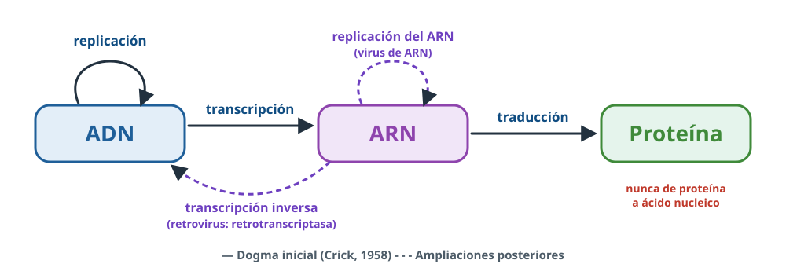
Figura 1. Dogma central de la biología molecular (Crick) y sus ampliaciones.
Replicación: copia del ADN antes de la división celular.
Transcripción: síntesis de ARN a partir de un ADN molde.
Traducción: síntesis de un polipéptido con la información del ARNm.
Ampliaciones: la transcripción inversa (de ARN a ADN), propia de algunos virus (retrovirus como el VIH, mediante la enzima retrotranscriptasa), y la replicación del ARN en muchos virus de ARN.
Para saber más · cómo se demostró
Griffith (1928) vio que un «principio transformante» de neumococos muertos convertía en virulentas a bacterias vivas; Avery, MacLeod y McCarty (1944) demostraron que ese principio era el ADN; Hershey y Chase (1952) marcaron fagos con ³⁵S (proteínas) y ³²P (ADN) y comprobaron que en la bacteria solo entraba el ³²P, es decir, el ADN.
3Gen, alelo, homocigótico y heterocigótico
Gen: fragmento de ADN que determina una característica; es la unidad genética funcional. Hoy se precisa: secuencia de ADN que contiene la información para sintetizar una cadena polipeptídica o un ARN funcional (ARNt, ARNr…).
Genoma: conjunto de genes (material genético) de una célula, un individuo o una especie.
Alelo: cada una de las formas alternativas de un gen. Ocupan el mismo lugar (locus) en los cromosomas homólogos.
Homocigótico: individuo con los dos alelos de un gen iguales (AA o aa). Heterocigótico: con dos alelos diferentes (Aa).
Genotipo: información genética de un organismo. Fenotipo: caracteres que exhibe, expresión del genotipo en un ambiente.
Estructura general de un gen
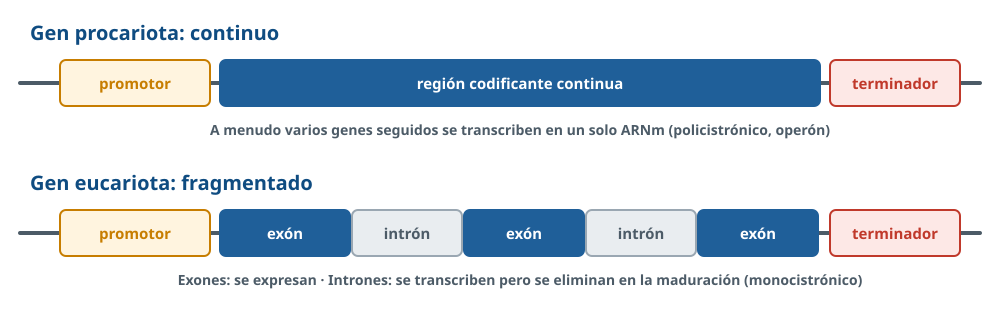
Figura 2. Elementos de un gen procariota y de uno eucariota.
Promotor: secuencia donde se une la ARN polimerasa e indica dónde empieza la transcripción.
Región codificante: se transcribe y contiene la información. En eucariotas está fragmentada en exones (se expresan) e intrones (se eliminan durante la maduración).
Terminador: señal de fin de la transcripción.
4Problemas de laboratorio: Chargaff, complementariedad y temperatura de fusión
Nuevo en 26-27 · B.1.2
Resolver problemas sencillos aplicando las reglas de Chargaff, determinando secuencias complementarias e interpretando la relación con la temperatura de fusión.
Reglas de Chargaff (ADN bicatenario)
A = T y G = C, por la complementariedad de bases.
Por tanto, púricas = pirimidínicas (A + G = T + C = 50 %).
La relación (A + T)/(G + C) varía de una especie a otra.
Cómo razonar un problema de bases
¿Tiene T? → ADN. ¿Tiene U? → ARN.
¿Se cumple A = T (o A = U) y G = C? → bicatenario. Si no se cumple → monocatenario.
Si es bicatenario y te dan una base: A = 30 % → T = 30 %, y G = C = (100 − 60)/2 = 20 %.
Si es monocatenario, no se puede usar la complementariedad: no se deducen las demás bases.
Secuencias complementarias
Las dos cadenas del ADN son complementarias (A–T, G–C) y antiparalelas: si una va 5′→3′, la otra va 3′→5′. Ejemplo:
5′-ATG TTT GGC TAA-3′ 3′-TAC AAA CCG ATT-5′
Temperatura de fusión (Tm)
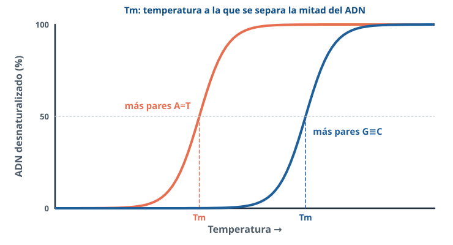
Figura 3. El ADN con más G≡C tiene una Tm más alta.
Al calentar el ADN se rompen los puentes de hidrógeno entre las bases y las dos hebras se separan (desnaturalización). La temperatura de fusión (Tm) es aquella a la que se ha separado la mitad del ADN.
Los pares G–C tienen tres puentes de hidrógeno y los A–T, dos: cuanto más G y C, más temperatura hace falta para separar las hebras.
Las hebras no se rompen porque los nucleótidos de una misma cadena están unidos por enlaces fosfodiéster, más fuertes(covalentes).
Al enfriar lentamente, las hebras complementarias vuelven a unirse (renaturalización); en esto se basan técnicas como la PCR.
5Genomas procariota y eucariota
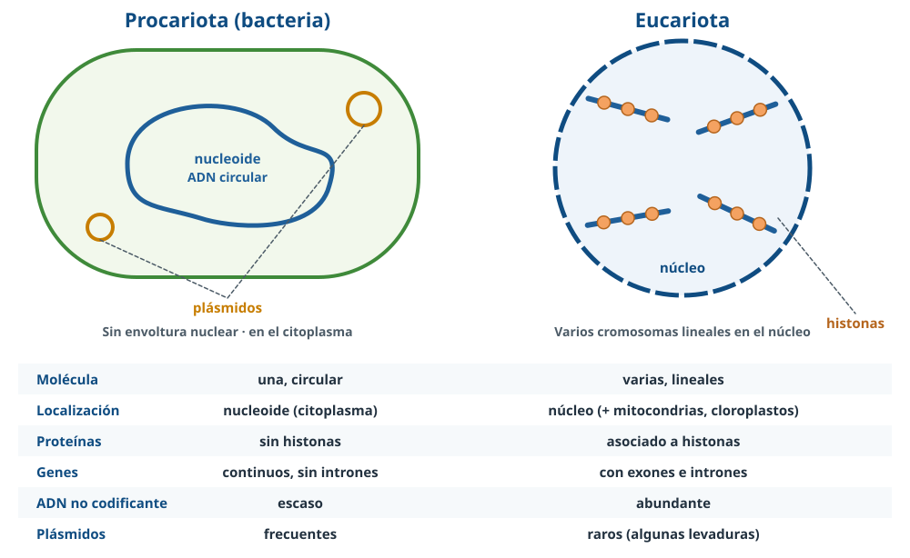
Figura 4. Organización del genoma en procariotas y eucariotas.
Procariota
Eucariota
Molécula de ADN
Una, circular
Varias, lineales (cromosomas)
Localización
Nucleoide, en el citoplasma (sin envoltura)
Núcleo; también ADN circular en mitocondrias y cloroplastos
Proteínas asociadas
Sin histonas(otras proteínas lo compactan)
Asociado a histonas (nucleosomas, cromatina)
Genes
Continuos, sin intrones; a menudo policistrónicos (operones)
Fragmentados: exones e intrones; monocistrónicos
ADN no codificante
Escaso
Abundante (intrones, secuencias repetidas…)
Plásmidos
Frecuentes
Raros (algunas levaduras)
Plásmidos: pequeñas moléculas de ADN circular extracromosómico que se replican de forma independiente. Aportan genes ventajosos, como la resistencia a antibióticos, se transfieren por conjugación y se usan como vectores en ingeniería genética.
Mismo genoma, distintas proteínas
Todas las células somáticas de un individuo tienen el mismo genoma, pero una célula hepática y una renal fabrican proteínas distintas por expresión diferencial del genoma (lo verás en la regulación génica).
6Replicación del ADN: características
La replicación es la duplicación del ADN mediante la cual se obtienen dos copias idénticas. Su finalidad es duplicar el material genético antes de la división celular para que se reparta por igual entre las células hijas. Ocurre en el núcleo, las mitocondrias y los cloroplastos de los eucariotas y en el citoplasma de los procariotas. En eucariotas tiene lugar en la fase S de la interfase.
Semiconservativa
Cada molécula hija tiene una cadena antigua (molde) y otra de nueva síntesis. Lo demostraron Meselson y Stahl (1958):
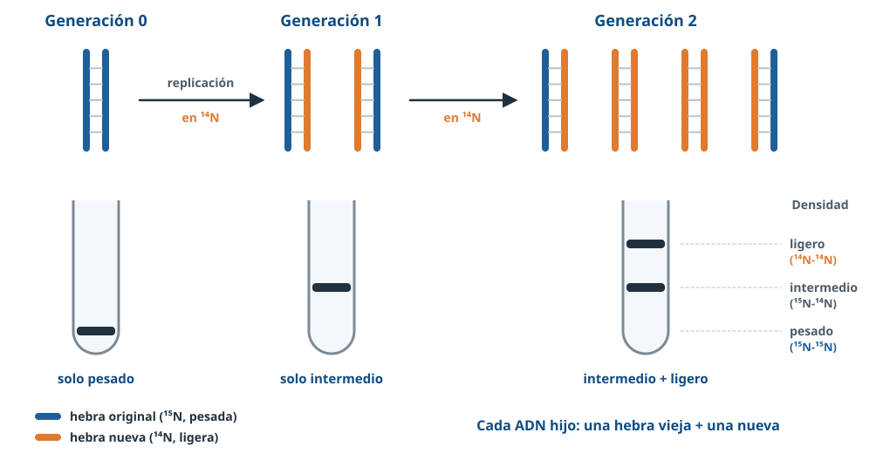
Figura 5. Experimento de Meselson y Stahl.
Cultivaron E. coli en ¹⁵N (ADN pesado) y lo pasaron a ¹⁴N.
1.ª generación: todo el ADN de densidad intermedia (una hebra con ¹⁵N y otra con ¹⁴N).
2.ª generación: mitad intermedio y mitad ligero (las dos hebras con ¹⁴N).
Con replicación conservativa, en la 1.ª generación habría salido una banda pesada y otra ligera; con dispersiva, en la 2.ª generación no habría banda ligera. Solo el modelo semiconservativo explica los resultados.
Bidireccional
En cada origen de replicación se abre una burbuja con dos horquillas que avanzan en sentidos opuestos.
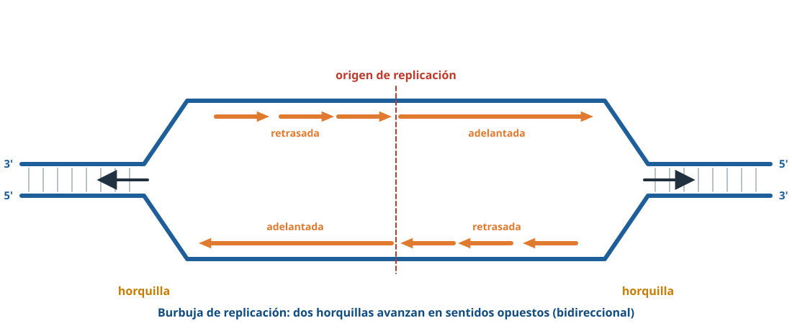
Figura 6. Burbuja de replicación: desde el origen avanzan dos horquillas.
Sentido 5′→3′
La ADN polimerasa solo añade nucleótidos al extremo 3′-OH de una cadena: la nueva hebra crece siempre en sentido 5′→3′, leyendo el molde en sentido 3′→5′. Además, no puede empezar una cadena: necesita un cebador de ARN.
Corrección de errores
Existen mecanismos de reparación que corrigen los errores de copia y los daños del ADN (por ejemplo, la propia ADN polimerasa revisa cada nucleótido añadido y elimina los mal emparejados). Las directrices piden saber que existen, sin describirlos.
7Replicación en procariotas: etapas y enzimas
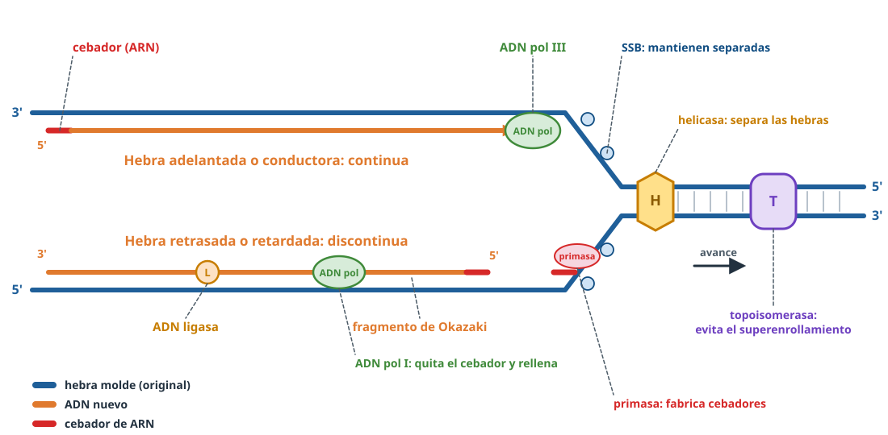
Figura 7. Horquilla de replicación. Pregunta muy frecuente con letras para identificar.
1. Iniciación
Empieza en un único punto, el origen de replicación(oriC en E. coli, reconocido por proteínas iniciadoras).
La helicasadesenrolla y separa las dos hebras rompiendo los puentes de hidrógeno.
Las topoisomerasasevitan el superenrollamiento que se produce delante de la horquilla (cortan y vuelven a unir el ADN).
Las proteínas SSB se unen a las hebras sencillas e impiden que vuelvan a unirse.
Se forman dos horquillas (replicación bidireccional).
2. Elongación
La primasa(una ARN polimerasa) sintetiza un cebador de ARN, punto de inicio para la ADN polimerasa.
La ADN polimerasa (III en procariotas) añade desoxirribonucleótidos complementarios al molde en sentido 5′→3′.
Como las cadenas son antiparalelas y la polimerasa solo trabaja en sentido 5′→3′:
Hebra adelantada o conductora: se sintetiza de forma continua, en el mismo sentido que avanza la horquilla; necesita un solo cebador.
Hebra retrasada o retardada: se sintetiza de forma discontinua, en sentido opuesto al avance de la horquilla, en fragmentos de Okazaki; cada uno necesita su cebador.
La ADN polimerasa Ielimina los cebadores y rellena los huecos con ADN.
La ADN ligasaune los fragmentos de Okazaki.
3. Terminación
Las dos horquillas avanzan por el cromosoma circular hasta encontrarse en el lado opuesto al origen. Se obtienen dos moléculas circulares idénticas, que se reparten entre las dos células hijas.
Molécula
Función
Helicasa
Separa las dos hebras (rompe los puentes de hidrógeno)
Topoisomerasa
Elimina las tensiones y el superenrollamiento por delante de la horquilla
Proteínas SSB
Mantienen separadas las hebras sencillas
Primasa
Sintetiza los cebadores de ARN
ADN polimerasa
Sintetiza la nueva hebra 5′→3′; la ADN pol I además quita los cebadores
ADN ligasa
Une los fragmentos de Okazaki
Tipo de molécula de cada elemento (PAU 2024)
Origen de replicación: ADN. Cebador: ARN. Hebra adelantada y fragmentos de Okazaki: ADN.
8Replicación en eucariotas: diferencias
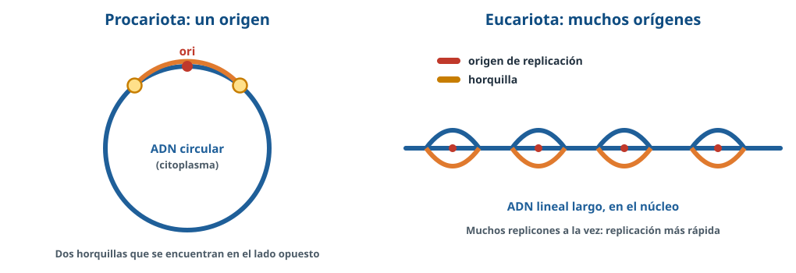
Figura 8. Un origen en procariotas; muchos orígenes (replicones) en eucariotas.
Procariotas
Eucariotas
Lugar
Citoplasma
Núcleo (y mitocondrias y cloroplastos)
Orígenes de replicación
Uno
Muchos a la vez
ADN
Circular, sin histonas
Lineal, asociado a histonas (también hay que duplicar las histonas)
Velocidad por horquilla
Más rápida (≈ 1000 nucleótidos/s)
Más lenta (≈ 50-100 nucleótidos/s), aunque el genoma completo se copia pronto gracias a los muchos orígenes
Enzimas
ADN polimerasas I, II y III
Otras ADN polimerasas (α, δ, ε…)
Fragmentos de Okazaki
Más largos (1000-2000 nucleótidos)
Más cortos (100-200 nucleótidos)
Extremos
No tiene (es circular)
Telómeros, que alarga la telomerasa en algunas células
Así lo preguntan (2018)
«E. coli (4,6 Mb) tarda 40 minutos en replicar su genoma y Drosophila (180 Mb), solo 4. ¿Por qué?» → La mosca es eucariota: su ADN se replica desde muchos orígenes de replicación a la vez; la bacteria tiene un solo origen.
9Los ARN en la expresión génica
La estructura de cada ARN se estudió en el tema de ácidos nucleicos. Aquí importa su papel:
ARN
Función en la expresión génica
ARN mensajero (ARNm)
Contiene el mensaje genético: lleva la información del ADN a los ribosomas, en codones
ARN transferente (ARNt)
Transporta los aminoácidos al ribosoma; su anticodón reconoce el codón y su extremo aceptor (3′) lleva el aminoácido
ARN ribosómico (ARNr)
Forma parte del ribosoma junto a proteínas (y cataliza el enlace peptídico)
ARN heteronuclear (ARNhn)
Es el transcrito primario (pre-ARNm) en el núcleo, antes de madurar
ARN nucleolar
Se forma en el nucleolo: precursor de los ARNr (y pequeños ARN que participan en su procesamiento)
10Transcripción en procariotas
La transcripción es la síntesis de ARN complementario a una cadena de ADN que actúa como molde. Su significado: obtener los ARN necesarios para la síntesis de proteínas. En eucariotas ocurre en el núcleo (y en mitocondrias y cloroplastos); en procariotas, en el citoplasma.
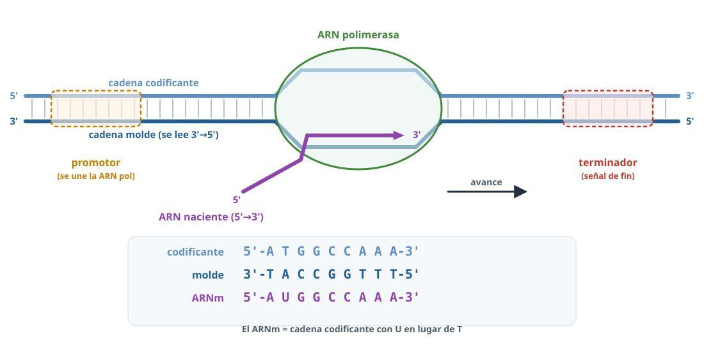
Figura 9. Transcripción: el ARNm tiene la secuencia de la cadena codificante con U en lugar de T.
Cadena molde: la cadena de ADN que se transcribe; se lee en sentido 3′→5′.
Cadena codificante: la complementaria de la molde; tiene la misma secuencia que el ARNm, con T en lugar de U.
Se copia una sola cadena y el ARN crece en sentido 5′→3′.
Etapas
Iniciación: la ARN polimerasa reconoce y se une al promotor, sitio de unión de la ARN polimerasa para iniciar la transcripción(en bacterias lo reconoce gracias a su subunidad o factor σ). Abre la doble hélice.
Elongación: la ARN polimerasa incorpora ribonucleótidos complementarios a la cadena molde (A–U, T–A, G–C, C–G) y avanza; no necesita cebador. Detrás de ella el ADN vuelve a cerrarse.
Terminación: al llegar a la señal de terminación (terminador) la polimerasa se separa y se libera el ARN (en bacterias, por una horquilla del propio ARN o por la proteína ρ).
Errores que restan
La transcripción no necesita cebador ni helicasa aparte: la propia ARN polimerasa abre el ADN.
El ARN no es igual a la cadena molde: es igual a la codificante (con U).
En procariotas el ARNm se traduce mientras se transcribe, porque ambos procesos ocurren en el citoplasma.
11Transcripción en eucariotas y maduración del ARNm
Factores de transcripción: proteínas que se unen al promotor (por ejemplo, a la caja TATA) y permiten que la ARN polimerasa se una e inicie la transcripción.
Los genes tienen exones e intrones: se transcribe todo y se obtiene un ARNm inmaduro o transcrito primario (ARN heteronuclear).
Maduración (en el núcleo, sin necesidad de detallarla): se añade una caperuza en el extremo 5′ (7-metilguanosina), una cola de poli-A en el extremo 3′ y se eliminan los intrones y se unen los exones (corte y empalme o splicing).
El ARNm maduro sale por los poros nucleares al citoplasma, donde se traduce.
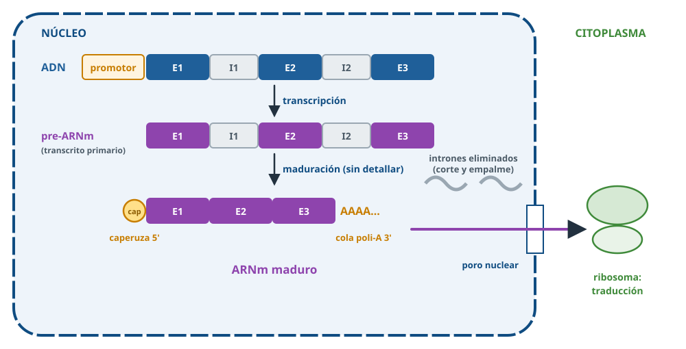
Figura 10. Transcripción y maduración del ARNm en eucariotas.
Procariotas
Eucariotas
Localización
Citoplasma
Núcleo (y mitocondrias y cloroplastos)
ARN polimerasas
Una para todos los ARN
Tres en el núcleo (I: ARNr; II: ARNm; III: ARNt y ARNr 5S)
Inicio
La polimerasa reconoce el promotor
Necesita factores de transcripción
Maduración
El ARNm apenas se modifica
Caperuza, cola poli-A y eliminación de intrones
ARNm
Policistrónico
Monocistrónico
Relación con la traducción
Simultáneas (se traduce mientras se transcribe)
Separadas en el espacio y en el tiempo
Así lo preguntan (2013)
«En eucariotas el ARNm puede ser traducido antes de terminar de sintetizarse.» → Falsa: el ARNm debe madurar, salir del núcleo y llegar a los ribosomas del citoplasma.
12El código genético
El código genético es el sistema de correspondencia entre los tripletes del ARNm y los aminoácidos que codifican.
Codón: tres nucleótidos consecutivos del ARNm que codifican un aminoácido.
Anticodón: triplete del ARN transferente que se une a un codón complementario.
Codones de terminación (UAA, UAG, UGA): no corresponden a ningún aminoácido y finalizan la síntesis de proteínas.
Codón de inicio: AUG, que codifica metionina(N-formilmetionina en bacterias).
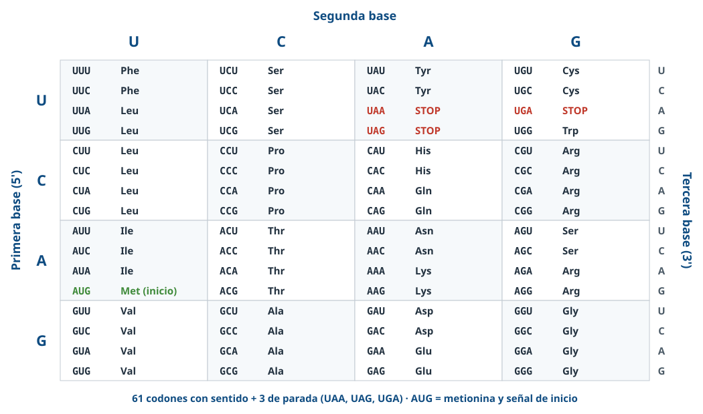
Figura 11. Tabla del código genético. En el examen te la dan: hay que saber usarla, no memorizarla.
Características
Característica
Significado
Universal
Es el mismo en casi todos los seres vivos. Con excepciones: en las mitocondrias y en algunos protozoos ciliados ciertos codones cambian de significado (por ejemplo, UGA codifica triptófano en las mitocondrias de los vertebrados).
Degenerado
Varios codones codifican el mismo aminoácido (solo Met y Trp tienen un único codón).
Sin ambigüedad
Cada codón corresponde a un único aminoácido.
Continuo (sin comas)
Se lee de tres en tres sin interrupciones desde el codón de inicio hasta uno de parada.
Sin solapamiento
Cada nucleótido pertenece a un solo codón.
Las dos preguntas estrella
¿Por qué la insulina de ratón se fabrica en una bacteria? → El código es universal.
¿Por qué dos ARNm distintos pueden dar la misma proteína? ¿Por qué no se puede deducir el ARNm a partir de la proteína? → El código es degenerado.
¿Y por qué un ARNm solo da una proteína? → Cada codón corresponde a un único aminoácido (no es ambiguo).
13Traducción
La traducción es la síntesis de un polipéptido con la información de la secuencia de bases del ARNm. Ocurre en los ribosomas(70S en procariotas: 30S + 50S; 80S en eucariotas: 40S + 60S).
Activación de los aminoácidos
Cada aminoácido se une a su ARNt por la enzima aminoacil-ARNt sintetasa, en el citoplasma, con gasto de ATP. Así se forma el aminoacil-ARNt.
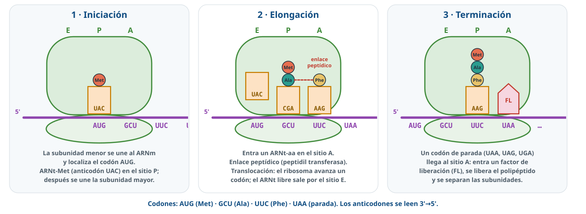
Figura 12. Etapas de la traducción. Sitios del ribosoma: A (aminoacil), P (peptidil) y E (salida).
Iniciación: la subunidad menor se une al ARNm (en bacterias, a una secuencia cercana al AUG) y localiza el codón de inicio AUG. El ARNt iniciador, con metionina y el anticodón UAC, se coloca en el sitio P. Se une la subunidad mayor(intervienen factores de iniciación y GTP).
Elongación:
Un aminoacil-ARNt cuyo anticodón es complementario del codón entra en el sitio A.
Se forma el enlace peptídico entre el grupo carboxilo del aminoácido (o péptido) del sitio P y el grupo amino del aminoácido del sitio A, catalizado por la peptidil transferasa(actividad del ARNr de la subunidad mayor). El péptido queda en el ARNt del sitio A.
Translocación: el ribosoma avanza un codón (5′→3′): el ARNt con el péptido pasa al sitio P y el ARNt vacío sale por el sitio E. El sitio A queda libre para el siguiente.
Terminación: llega al sitio A un codón de terminación (UAA, UAG o UGA), que ningún ARNt reconoce. Entra un factor de liberación, se libera el polipéptido y se separan las subunidades del ribosoma.
Polirribosomas
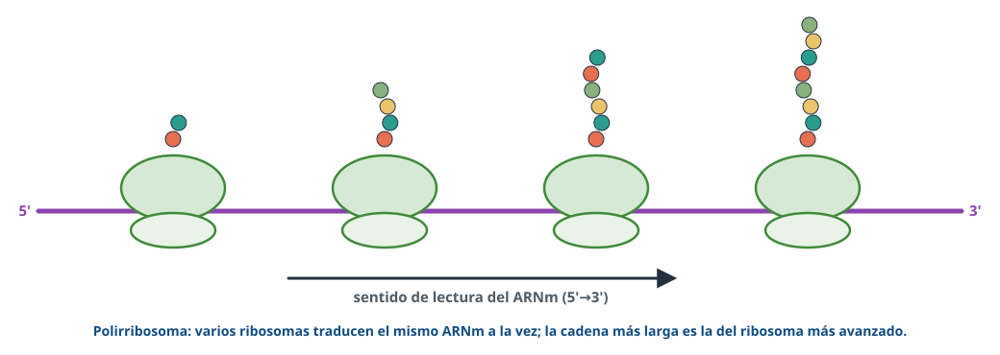
Figura 13. Polirribosoma o polisoma.
Varios ribosomas traducen a la vez el mismo ARNm (polisoma), lo que permite fabricar muchas copias de la proteína. Después, la cadena se pliega y puede sufrir modificaciones (en el RER y el aparato de Golgi en el caso de proteínas de secreción o de membrana).
Así lo preguntan (2012)
Al describir la traducción deben aparecer: unión del ARNm al ribosoma, el ARNt, el enlace peptídico y el polipéptido, ordenados en iniciación, elongación y terminación.
14Problemas de transcripción y traducción
Método en cuatro pasos
Escribe siempre los extremos 5′ y 3′.
ARNm = complementario y antiparalelo a la cadena molde = igual a la codificante con U.
Lee los codones del ARNm de 5′ a 3′, de tres en tres, empezando en el AUG (si te lo dicen) y hasta el codón de parada.
Anticodón = complementario del codón (los criterios lo escriben alineado con el codón, es decir, de 3′ a 5′).
Ejemplo resuelto
Cadena molde: 3′-TAC GGT CAT ACT-5′
Cadena codificante: 5′-ATG CCA GTA TGA-3′
ARNm: 5′-AUG CCA GUA UGA-3′
Péptido: Met – Pro – Val (UGA es de parada)
Anticodones: 3′-UAC-5′, 3′-GGU-5′, 3′-CAU-5′ (ningún ARNt para UGA)
Cálculos frecuentes
Nucleótidos de ARNm para n aminoácidos: 3n + 3 (el codón de parada). Para 40 aminoácidos: 123 nucleótidos y 40 ARNt.
Aminoácidos máximos de un ARNm de N nucleótidos: N/3 (o N/3 − 1 si descuentas el codón de parada).
Replicación con marcaje: tras n replicaciones en medio sin marca hay 2 hebras marcadas de 2ⁿ⁺¹ en total. Tras 1: 50 %; tras 2: 25 % de las hebras.
15Así se pregunta en la PAU
PAU 2026 · Modelo2 puntosCompetencial
Unos estudiantes observan al microscopio: «Una estructura circular y compacta en el citosol se abre por un único lugar y aparecen dos puntos que se alejan mientras se forman nuevas hebras. Una de las hebras nuevas se fabrica de seguido y en la otra vemos pequeños fragmentos que luego se fusionan. Finalmente aparecen dos estructuras circulares iguales antes de que la célula se divida». a) Nombre el proceso [0,1]. b) Tipo de organización celular y dos razones [0,5]. c) ¿Por qué «se abre por un único lugar y aparecen dos puntos que se alejan»? [0,2]. d) ¿Por qué una hebra «se fabrica de seguido» y la otra en fragmentos? [0,6] ¿Qué nombre recibe cada hebra? [0,2]. e) Monómeros de la estructura circular y moléculas de su hidrólisis completa [0,4].
Ver respuesta modelo
a) Replicación del ADN.
b) Procariota (bacteria): un único origen de replicación, ocurre en el citosol, molécula circular (dos de ellas).
c) La replicación es bidireccional: desde el origen avanzan dos horquillas en sentidos opuestos.
d) La ADN polimerasa solo sintetiza en sentido 5′→3′ y las cadenas son antiparalelas. La hebra adelantada o conductora avanza en el mismo sentido que la horquilla y se sintetiza de forma continua; la hebra retrasada o retardada se sintetiza en sentido opuesto al avance de la horquilla, en fragmentos de Okazaki que luego une la ligasa.
e) Desoxirribonucleótidos; su hidrólisis completa da ácido fosfórico, desoxirribosa y bases nitrogenadas (A, T, G y C).
PAU 2024 · Titular A1 puntoCon imagen
Con relación a una imagen de una horquilla: a) Indique el proceso [0,1]. b) Nombre los elementos A (origen), B, C, D y E [0,5]. c) ¿Qué tipo de molécula son A, B, C y D? [0,4]
Ver respuesta modelo
a) Replicación del ADN. b) A: origen de replicación; B: cebador; C: hebra adelantada; D: fragmentos de Okazaki; E: hebra retrasada. c) A: ADN; B: ARN; C: ADN; D: ADN.
PAU 2024 · Reserva B (y 2011)2 puntos
a) Defina replicación [0,4]. b) Cite cuatro enzimas implicadas [0,4]. c) ¿Dónde ocurre en células procarióticas? [0,2] d) ¿Qué significa que sea semiconservativa y bidireccional? [1]
Ver respuesta modelo
a) Copia del ADN en la que interviene la ADN polimerasa; se obtienen dos moléculas idénticas. b) Helicasa, topoisomerasa, ADN polimerasa, ligasa, primasa (cuatro). c) En el citoplasma. d) Semiconservativa: cada ADN tiene una cadena antigua y otra nueva. Bidireccional: desde el origen de replicación avanzan dos horquillas en sentidos opuestos.
PAU 20141 punto
Bacterias con ADN pesado (¹⁵N) se cultivan en un medio con ¹⁴N. ¿Qué densidad tendrá el ADN en la primera generación? [0,5] ¿Y en la segunda? [0,5] Razone.
Ver respuesta modelo
1.ª: densidad intermedia, porque cada ADN tiene una hebra con ¹⁴N y otra con ¹⁵N: la replicación es semiconservativa. 2.ª: mitad de densidad intermedia y mitad de densidad baja (dos hebras con ¹⁴N).
PAU 2023 · Junio1 punto
Un ADN bicatenario con todos sus nucleótidos marcados con fósforo radiactivo se replica en un medio sin él. ¿Qué porcentaje de hebras será radiactivo tras la primera división? [0,5] ¿Y tras la segunda? [0,5] Razone y haga un esquema.
Ver respuesta modelo
a) 50 % de las hebras: dos moléculas, cada una con una hebra radiactiva vieja y otra nueva. b) 25 %: cuatro moléculas, dos híbridas y dos sin marca (2 hebras marcadas de 8). Se debe a que la replicación es semiconservativa. Esquema: dibuja las hebras viejas de un color y las nuevas de otro, como en la figura 5.
PAU 2022 · Junio (y 2014)2 puntos
Defina: a) transcripción [0,5]; b) traducción [0,5]. c) Describa el proceso de transcripción [1].
Ver respuesta modelo
a) Síntesis de ARN complementario a una cadena de ADN que actúa como molde. b) Síntesis de un polipéptido con la información de la secuencia de bases del ARNm.
c) Debe mencionar: cadena codificante y cadena molde, copia de una sola cadena, señal de inicio (promotor) donde se une la ARN polimerasa, síntesis en sentido 5′→3′ y señal de terminación.
PAU 2024 · Suplente B2 puntos
a) Explique el concepto de cadena molde y cadena codificante [0,4]. b) ¿Qué enzima interviene en la transcripción y cuál es su función? [0,6] c) Función de la región promotora [0,4]. d) Indique y defina los dos procesos de la expresión génica [0,6].
Ver respuesta modelo
a) Molde: la cadena de ADN que se transcribe; codificante: la complementaria, con la misma secuencia que el ARNm pero con T en lugar de U. b) ARN polimerasa: incorpora ribonucleótidos para sintetizar ARN usando el ADN como molde. c) Sitio de unión de la ARN polimerasa para iniciar la transcripción. d) Transcripción: síntesis de ARNm a partir de ADN; traducción: el ARNm dirige la unión de aminoácidos en la síntesis de proteínas.
PAU 2024 · Titular B (y 2011)2 puntos
a) ¿Qué se entiende por código genético? [0,5] b) Explique los términos codón y anticodón [0,5]. c) ¿Qué son los codones de terminación? [0,4] d) Explique dos características del código genético [0,6].
Ver respuesta modelo
a) Correspondencia entre los tripletes del ARNm y los aminoácidos. b) Codón: triplete del ARNm que codifica un aminoácido; anticodón: triplete del ARNt complementario de un codón. c) Tripletes que no codifican ningún aminoácido y marcan el final de la síntesis de proteínas. d) Universal: el mismo en casi todos los seres vivos; degenerado: varios codones para un mismo aminoácido.
PAU 2024 · Suplente A1 punto
A partir del ARNm 3′-UAUAUACAAUUU-5′: a) determine la cadena de ADN de la que se transcribió, su complementaria y la orientación de ambas [0,7]. b) Escriba el anticodón de cada uno de los cuatro codones [0,3].
Ver respuesta modelo
a) Cadena molde: 5′-ATATATGTTAAA-3′; complementaria (codificante): 3′-TATATACAATTT-5′.
b) Anticodones: AAA, UUG, UAU, AUA. Leyendo el ARNm de 5′ a 3′ los codones son UUU, AAC, AUA y UAU; los anticodones están escritos alineados con ellos, de 3′ a 5′.
PAU 20151 puntoTabla del código
Un ARNm poli-UC (solo U y C, siempre en ese orden) se traduce. Escriba los doce primeros nucleótidos [0,1], la secuencia de aminoácidos [0,4] y los anticodones de los ARNt [0,5].
Ver respuesta modelo
ARNm: UCUCUCUCUCUC. Codones UCU, CUC, UCU, CUC → Ser-Leu-Ser-Leu. Anticodones: AGA (serina) y GAG (leucina).
PAU 2024 · Titular A (y 2016)1 punto
Explique por qué a) una secuencia de aminoácidos puede corresponder a más de una secuencia de ARNm [0,5], b) mientras que un ARNm solo puede originar una secuencia de aminoácidos [0,5].
Ver respuesta modelo
a) Un aminoácido puede estar codificado por más de un codón: el código es degenerado. b) Cada codón corresponde a un único aminoácido(el código no es ambiguo; los criterios lo relacionan también con su universalidad).
PAU 2017 · Reserva B1 punto
a) ¿Cómo puede una célula tener unos 10 000 tipos de proteínas si solo hay 20 aminoácidos? [0,5] b) ¿Cómo es posible que una bacteria con el gen de la insulina de ratón fabrique insulina de ratón? [0,5]
Ver respuesta modelo
a) Con 20 aminoácidos se pueden formar múltiples combinaciones (secuencias distintas en orden y longitud). b) Por la universalidad del código genético: el gen se transcribe y se traduce en los ribosomas bacterianos.
PAU 2016 · Reserva A1 punto
Dos muestras de ADN del mismo tamaño se desnaturalizan: la A a 80 ºC y la B a 90 ºC. ¿A qué se debe la diferencia? [1]
Ver respuesta modelo
A tiene más pares A-T (dos puentes de hidrógeno) y B más pares G-C (tres puentes de hidrógeno); con más puentes de hidrógeno se necesita más temperatura para separar las hebras.
PAU 2025 · Navarra1 punto
a) Presente en una tabla dos diferencias entre el genoma procariota y el eucariota [0,5]. b) Explique qué son los plásmidos, dónde se encuentran y qué función cumplen [0,5].
Ver respuesta modelo
a) Procariota: una molécula de ADN circular en el nucleoide, sin histonas, sin intrones y con poco ADN no codificante. Eucariota: varios cromosomas lineales en el núcleo, asociados a histonas, con intrones y mucho ADN no codificante (dos diferencias en tabla).
b) Pequeñas moléculas de ADN circular extracromosómico que se replican de forma independiente; están en el citoplasma de las bacterias (y en algunas levaduras). Aportan genes ventajosos, como la resistencia a antibióticos, y se usan como vectores en biotecnología.
Práctica BioCelia · estilo 26-271 puntoLaboratorio
En un laboratorio se analizan dos ADN bicatenarios de igual longitud. El ADN X tiene un 18 % de adenina y el ADN Y, un 32 %. a) Calcule el porcentaje de las demás bases de cada uno [0,5]. b) Al calentarlos, ¿cuál tendrá mayor temperatura de fusión? Razone [0,5].
Ver respuesta modelo
a) Por complementariedad (A = T, G = C): X → T 18 %, G 32 %, C 32 %; Y → T 32 %, G 18 %, C 18 %. b) El ADN X, porque tiene más pares G-C, unidos por tres puentes de hidrógeno (frente a dos en los A-T): hace falta más energía para separar sus hebras.
Práctica BioCelia · estilo 26-271 puntoTabla del código
La cadena molde de un fragmento de gen bacteriano es 3′-TAC GGT CAT ACT-5′. a) Escriba la cadena codificante y el ARNm, indicando la polaridad [0,4]. b) Con la tabla del código, indique el péptido resultante [0,3]. c) ¿Por qué en esta bacteria el ARNm puede empezar a traducirse antes de terminar de transcribirse? [0,3]
Ver respuesta modelo
a) Codificante: 5′-ATG CCA GTA TGA-3′; ARNm: 5′-AUG CCA GUA UGA-3′. b) Met-Pro-Val; UGA es un codón de terminación. c) Porque en las procariotas no hay núcleo: transcripción y traducción ocurren en el citoplasma y el ARNm no necesita madurar.
¿Qué diferencia hay entre un individuo homocigótico y uno heterocigótico? VerEl homocigótico tiene los dos alelos de un gen iguales; el heterocigótico, diferentes.
Un ADN bicatenario tiene un 30 % de A. ¿Cuánta G tiene? Ver20 % (T = 30 %, G = C = 20 %).
¿Por qué un ADN rico en G-C tiene mayor Tm? VerLos pares G-C tienen tres puentes de hidrógeno y los A-T, dos.
Cita tres diferencias entre el genoma procariota y el eucariota. VerCircular/lineal; sin/con histonas; sin/con intrones; poco/mucho ADN no codificante; nucleoide/núcleo.
¿Qué demostró el experimento de Meselson y Stahl? VerQue la replicación es semiconservativa.
¿Por qué hace falta un cebador? VerLa ADN polimerasa no puede empezar una cadena: solo añade nucleótidos a un extremo 3′-OH.
¿Qué enzima une los fragmentos de Okazaki? VerLa ADN ligasa.
¿Qué hacen la helicasa, la topoisomerasa y las SSB? VerSepara las hebras; evita el superenrollamiento; mantienen separadas las hebras sencillas.
¿Por qué los eucariotas replican tan rápido su enorme genoma? VerPorque tienen muchos orígenes de replicación a la vez.
¿Qué es el promotor? VerLa secuencia de ADN donde se une la ARN polimerasa para iniciar la transcripción.
¿Qué tres modificaciones sufre el pre-ARNm eucariota? VerCaperuza en 5′, cola poli-A en 3′ y eliminación de intrones.
¿Qué significa que el código es degenerado? VerQue varios codones codifican el mismo aminoácido.
¿Qué enzima une cada aminoácido a su ARNt? VerLa aminoacil-ARNt sintetasa.
¿Qué es la translocación? VerEl avance del ribosoma un codón hacia el extremo 3′ del ARNm.
¿Cuántos nucleótidos de ARNm codifican, como mínimo, una proteína de 100 aminoácidos? Ver303 (300 + 3 del codón de parada).
Fuentes: Directrices y orientaciones de la PAU de Biología de Andalucía (curso 2026-27); criterios oficiales de corrección de la PAU de Andalucía (2010-2026) y de otras comunidades (2025); resúmenes del departamento; Campbell y Reece, Biología; Alberts y col., Biología molecular de la célula; Lehninger, Principios de bioquímica. Esquemas: elaboración propia de BioCelia.